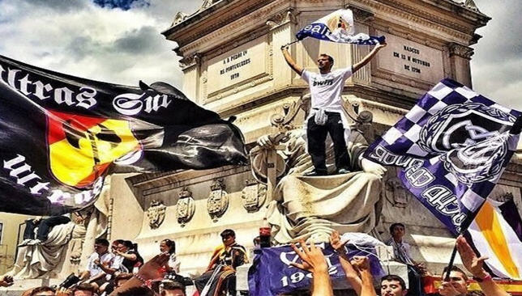

هل يعود الألتراس سور ضد باريس في الأبطال؟ و ماهو التراس سور؟
ألتراس سور هم مشجعين متطرفين لريال مدريد وقد منعوا من الحضور لمباريات ريال مدريد بسبب حادثة 1998
سمي التراس سور او التراس الجنوب نسبة لجلوسهم في جنوب ملعب السانتياغو برنابيو , وكانوا يعملون الشغب قبل كل مباراة لريال مدريد الى ان اتى يوم 1 ابريل وفي نصف نهائي دوري الأبطال بين ريال مدريد وبروسيا دورتموند ليتسلق احد من جماعة التراس سور الأعمده الفولاذيه الداعمه للمرمى الجنوبي مما ادى الى سقوط المرمى لتتأخر أنطلاقة المباراة 75 دقيقه
تعاملت ادارة ريال مدريد بعد الحادثه مع هذه المجموعه بحزم لينقلونهم الى المدرجات العلوي وبعد انتخاب فلورنتينو بيريز رئيسا لريال مدرد اعادهم الى خلف المرمى ولكن مع تقليل المقاعد المخصصه لهم
في اياب ريال مدريد وفولفسبورغ سمح فلورنتينو بيريز لألتراس سور بالدخول للمباراة بعد حظرهم لفتره من دخول الملعب ليقلب النتيجه ريال مدريد ويتأهل بنتيجة3-2
وبعد الخساره ضد باريس سان جيرمان في ذهاب دور 16 بنتيجة 1-0 لتتداول الناس خبر عودة التراس سور بعد سنين من حظر الدخول